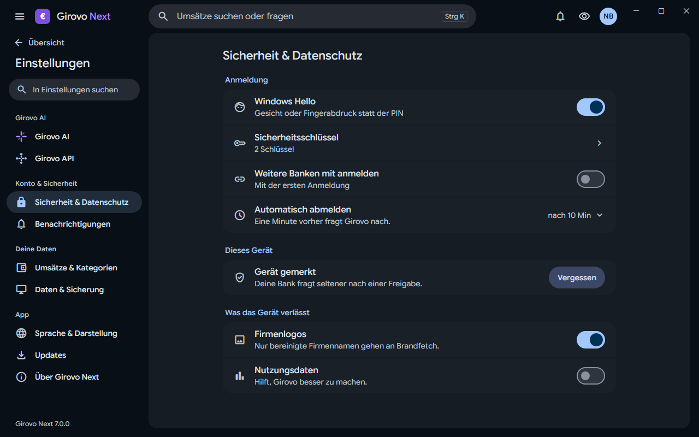
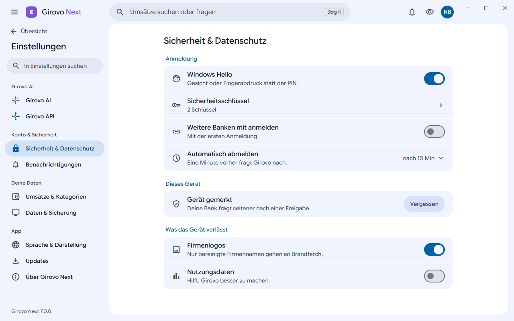
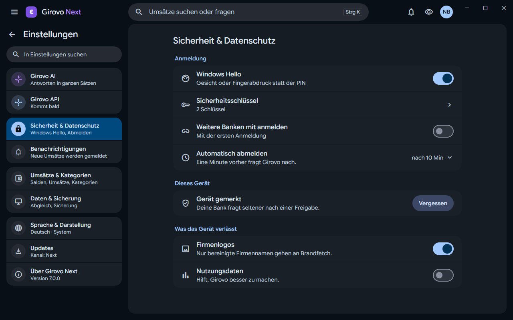
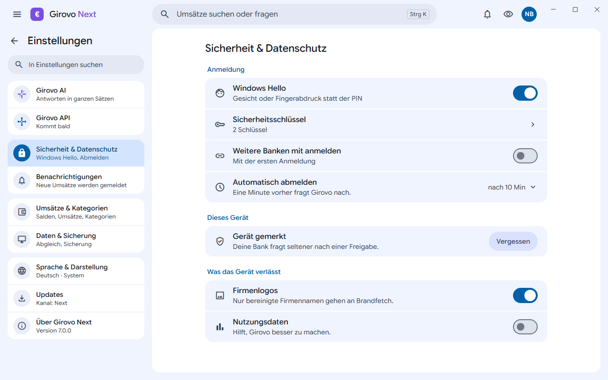
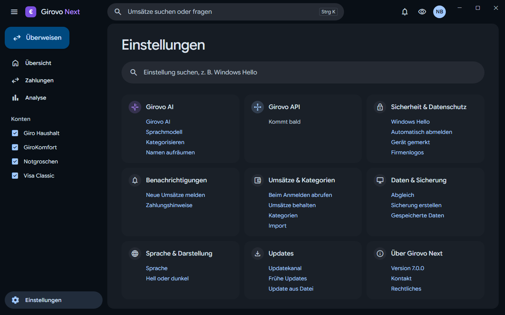
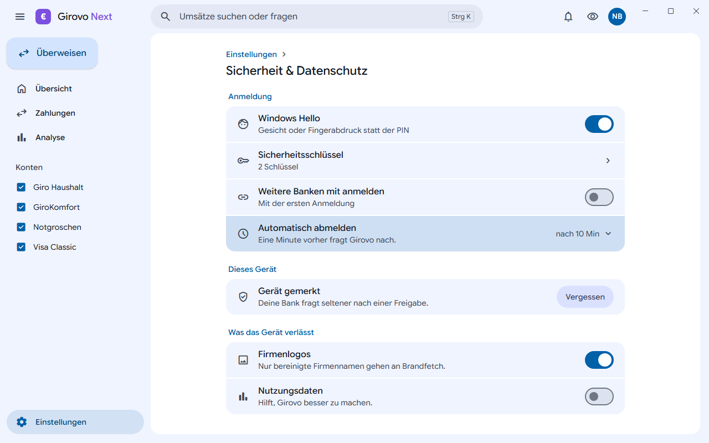

Drei Richtungen für die Seitenleiste und die Seite. Alle: das Zahnrad unten verschwindet, Girovo AI und API behalten ihre Farben, eine Suche nur für Einstellungen.
Die neun Seiten in vier benannten Gruppen: Girovo AI, Konto & Sicherheit, Deine Daten, App. Der Weg zurück ist eine leise Zeile oben, die Version steht unten.
Am nächsten an heute, nur geordnet.


Jede Seite sagt in einer Zeile, was auf ihr ist oder wie sie steht, wie die Liste auf dem Telefon. Gruppen als Blöcke, die Seitenleiste etwas breiter (320 px).
Man sieht, wo etwas steht, ohne zu klicken.


Die Seitenleiste bleibt die normale, Einstellungen ist nur markiert. Auf dem Blatt eine Startseite mit großer Suche und neun Karten, jede nennt ihre wichtigsten Optionen als Links.
Ein Link öffnet die Seite und hebt die Zeile hervor (rechts: Automatisch abmelden).

